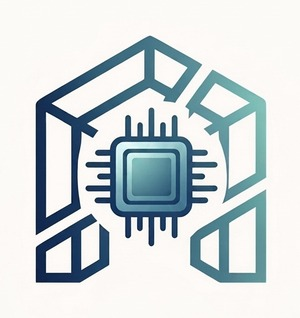
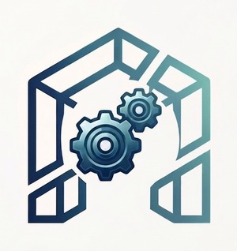
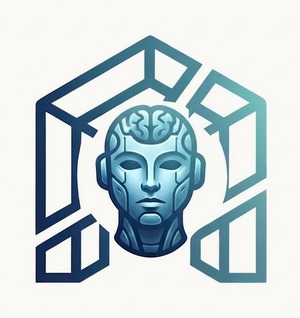

Tecnología que sostiene el crecimiento de tu negocio.
Diseñamos software, automatizaciones y agentes de IA que le quitan trabajo manual a tu equipo, para que tu negocio pueda crecer sin depender de que alguien esté ahí sosteniéndolo todo a mano.
Tu negocio no debería crecer al ritmo de tus procesos manuales.
Casi todas las empresas que atendemos podrían operar mejor si su tecnología no se los frenara. El equipo sostiene el crecimiento haciendo un esfuerzo extra, con herramientas que nunca se diseñaron para eso.
Si algo de esto te suena familiar, no es que tu equipo trabaje mal: es que le falta la estructura tecnológica que sostenga el ritmo al que quieres crecer. Eso es justo lo que construimos.
Tres piezas que trabajan juntas.

Software
Sistemas hechos a la medida de tu negocio, para que dejes el Excel, el cuaderno o los mensajes sueltos y tengas todo en un solo lugar.

Automatización
Nos encargamos de lo repetitivo que le quita horas a tu equipo cada semana (cotizar, dar seguimiento, mandar recordatorios) para que se enfoquen en vender y atender.

IA
Integramos IA donde de verdad resuelve algo: responder mensajes, agendar citas y organizar información, sin complicarte la operación.
Un proceso claro, sin sorpresas.
Cuatro etapas con resultados claros en cada una, para que siempre sepas qué se está construyendo y qué vas a recibir.
Entender
Conocemos tu negocio y encontramos dónde se está perdiendo tiempo.
Diseñar
Te mostramos exactamente qué vamos a construir y en cuánto tiempo, antes de empezar.
Construir
Construimos, probamos y lo dejamos funcionando en tu negocio.
Evolucionar
Medimos resultados reales y seguimos ajustando contigo.
Lo que construimos, en concreto.
Ventas
Un CRM y funnels que dan seguimiento automático a cada lead, para que ninguna venta se te escape por falta de tiempo.
Operaciones
Conecta ventas, inventario y administración en un solo flujo, para dejar de copiar el mismo pedido de un sistema a otro.
Atención al cliente
Un chatbot o asistente que responde por WhatsApp con la información correcta, incluso fuera de horario.
Administración
Reduce el trabajo manual en facturación, cobranza y pagos, para que tu equipo deje de perseguir papeles y correos.
Información
Convierte los datos de ventas, inventario y clientes en reportes y dashboards que muestran qué está pasando de verdad.
Resultados reales, no promesas.
Servicio Piña
Taller y refaccionaria automotriz · QuerétaroToda la operación vivía en papel: cuando un cliente pedía información de su expediente de meses atrás, el equipo podía tardar hasta una semana en encontrarlo entre cajas físicas. No había forma de medir el desempeño del equipo, cada sucursal operaba por separado, y el área administrativa se ahogaba respondiendo mensajes preguntando "¿cómo va mi auto?".
Brenda Flores, junto con su equipo, lidera la transformación digital de Servicio Piña desde hace más de 7 años, con un sistema que controla cada auto desde que entra hasta que se entrega:
Pasaron de recibir cerca de 150 autos al mes a un récord de más de 300. El doble, con el mismo equipo.
Nuestra historia.
Antes de escribir una línea de código para otros negocios, crecí viendo el mío propio: el de mis papás.
Brenda Flores
Crecí entre negocios familiares: mi papá tenía zapaterías y mi mamá un restaurante. Vi de cerca lo que cuesta sacar adelante un negocio sin las herramientas correctas: las cuentas en un cuaderno, los pedidos en comandas de papel, días enteros que solo funcionaban si alguien estaba ahí para sostenerlo todo. Años después entré al desarrollo de software y reconocí esa misma escena en negocio tras negocio. Por eso fundé CIMBRA: para darle a esos negocios lo que a los de mis papás les hubiera cambiado todo. Hoy la lidero junto con mi equipo, con el mismo enfoque desde el primer día: entender antes de construir.
En CIMBRA estamos convencidos de que la tecnología correcta no complica tu operación: la sostiene. Por eso construimos software simple, útil y hecho a la medida de cómo trabajas, no al revés.
Simple
La tecnología debe hacer las cosas más sencillas, no más complicadas.
Útil
Construimos soluciones enfocadas en resultados reales.
A medida
Cada negocio tiene procesos diferentes. La solución también debería serlo.
Lo que normalmente preguntan antes de empezar.
¿Cuánto cuesta un proyecto con Cimbra?
Cada negocio y cada proceso es distinto, así que no manejamos precios fijos de catálogo. Cotizamos después de entender tu operación en una primera conversación sin costo.
¿Cuánto tiempo toma desarrollar una solución?
Depende de qué tan grande sea el proyecto: una automatización puntual puede tomar 1-2 semanas; un sistema o plataforma completa, de 4 a 10 semanas. Te damos un estimado claro en la fase de diseño, antes de construir.
¿Trabajan con negocios de cualquier tamaño?
Sí. Trabajamos tanto con negocios pequeños que quieren dejar de operar en Excel o WhatsApp, como con empresas más grandes que necesitan integrar sistemas o adoptar IA en su operación.
¿Qué pasa después de que el proyecto está listo?
No solo entregamos y desaparecemos. Damos seguimiento, medimos resultados y seguimos ajustando la solución: es la fase "Evolucionar" de nuestro proceso.
¿Necesito saber de tecnología para trabajar con ustedes?
No. Tú conoces tu negocio; nuestro trabajo es traducir tu operación real en la tecnología correcta, explicada en términos simples en cada paso.
¿Cómo empezamos?
Cuéntanos tu operación en el formulario de contacto o escríbenos directo por WhatsApp. Agendamos una llamada breve para entender el problema antes de proponer cualquier solución.
¿Qué podría funcionar mejor en tu negocio?
Cada semana que sigue operando igual es tiempo que ya no vuelve. Cuéntanos cómo trabajas hoy: en una llamada breve y sin costo te decimos si podemos ayudarte. Al enviar el formulario tu mensaje llega directo a nuestro correo.
O escríbenos directo por WhatsApp →